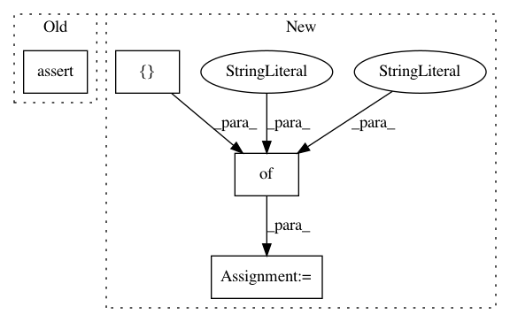

429ddb8fb8cc6d1492c9d459cd2120b75352f125,category_encoders/tests/test_leave_one_out.py,TestLeaveOneOutEncoder,test_leave_one_out_fit_callTwiceOnDifferentData_ExpectRefit,#TestLeaveOneOutEncoder#,40
Before Change
col_b_mapping = mapping[0]
self.assertEqual("col_b", col_b_mapping["col"]) // the model must get updated
self.assertEqual({"sum": 2.0, "count": 3, "mean": 2.0/3.0}, col_b_mapping["mapping"]["1"])
self.assertEqual({"sum": 1.0, "count": 3, "mean": 01.0/3.0}, col_b_mapping["mapping"]["2"])
After Change
mapping = encoder.mapping
self.assertEqual(1, len(mapping))
self.assertIn("col_b", mapping) // the model should have the updated mapping
expected = pd.DataFrame({"sum": [2.0, 1.0], "count": [3, 3]}, index=["1", "2"])
pd.testing.assert_frame_equal(expected, mapping["col_b"], check_like=True)
def test_leave_one_out_unique(self):
X = pd.DataFrame(data=["1", "2", "2", "2", "3"], columns=["col"])
In pattern: SUPERPATTERN
Frequency: 3
Non-data size: 4
Instances
Project Name: scikit-learn-contrib/categorical-encoding
Commit Name: 429ddb8fb8cc6d1492c9d459cd2120b75352f125
Time: 2018-10-23
Author: jkleint
File Name: category_encoders/tests/test_leave_one_out.py
Class Name: TestLeaveOneOutEncoder
Method Name: test_leave_one_out_fit_callTwiceOnDifferentData_ExpectRefit
Project Name: scikit-learn-contrib/DESlib
Commit Name: e5c6f47757837fa401f664438c2a34bb1217036b
Time: 2018-04-02
Author: rafaelmenelau@gmail.com
File Name: deslib/tests/des/test_des_knn.py
Class Name:
Method Name: test_select_less_diverse
Project Name: jnothman/UpSetPlot
Commit Name: f2f419b89221602dc31c69de32df1cba281db481
Time: 2019-05-30
Author: joel.nothman@gmail.com
File Name: upsetplot/tests/test_data.py
Class Name:
Method Name: test_from_contents